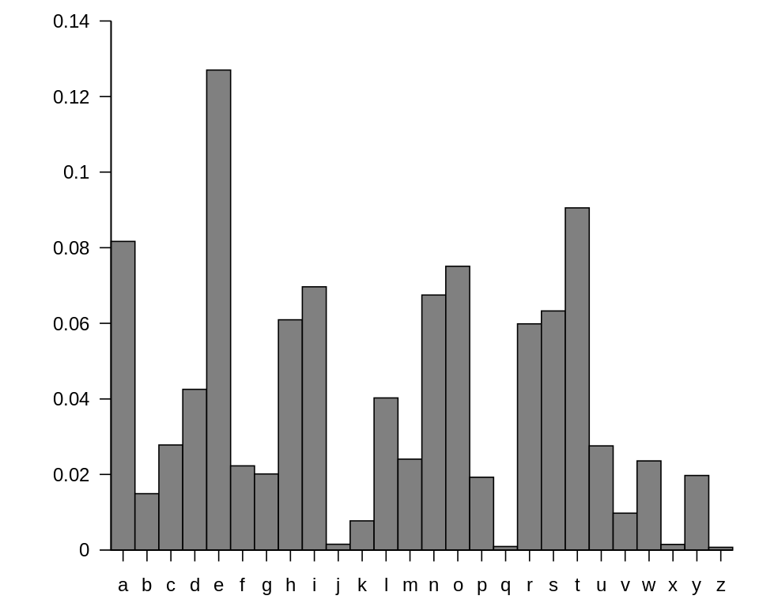

Department of Electrical Engineering, IIT Bombay
August 2, 2023
Dictionary definition: “the art of writing or solving codes”
Historically accurate but does not convey the current breadth of the field
Codes refers to schemes used for secret communication (encryption)
In addition to encryption, cryptography today deals with
mechanisms for ensuring integrity,
techniques for exchanging secret keys,
protocols for authenticating users,
electronic voting,
cryptocurrency, and more.
Modern definition: the study of mathematical techniques for securing digital information, systems, and distributed computations against adversarial attacks.
Formal definitions
Precise assumptions
Proofs of security
Two parties want to communicate over a channel which is monitored by an eavesdropper
They want to keep their messages hidden from the eavesdropper
A secret (the key) is shared by the communicating parties in advance and unknown to the eavesdropper
The workflow
When a party wants to send a message (plaintext) to the other, they use the shared key to encrypt the message and obtain a ciphertext
The ciphertext is transmitted over the channel and observed by the eavesdropper
The receiver uses the same shared key to decrypt the ciphertext and recover the plaintext
The same key is used for both encryption and decryption; so this setting is also called the symmetric-key setting
Communicating parties could be separated in space or time
The communicating parties must keep the key \(k\) secret
Should they also keep the details of the encryption and decryption also a secret?
In the late 19th century, Auguste Kerckhoffs argued against doing this
The cipher method must not be required to be secret, and it must be able to fall into the hands of the enemy without inconvenience.
Kerckhoffs’ Principle: Security relies solely on secrecy of key
Three reasons
Easier to keep a short key secret than to keep an algorithm secret
Easier to change key than encryption scheme
Standardization is easier
Julius Caesar encrypted by shifting the letters of the alphabet 3 places forward
a was replaced with D, b with E, and so on
In the rest of this lecture, we will use lower case letter for plaintext and uppercase letter for ciphertext
Encryption of the message begin the attack now gives EHJLQWKHDWWDFNQRZ
There is no key. Anyone learning how it works can ecrypt effortlessly
A variant of this cipher called ROT-13 is used nowadays in social media
Keyed variant of Caesar’s cipher
Key \(k\) is a number between 0 and 25
\(\texttt{Gen}\) outputs a uniform key \(k \in \{0, . . . , 25\}\)
\(\texttt{Enc}\) takes a key \(k\) and a plaintext and shifts each letter of the plaintext forward \(k\) positions (wrapping around at the end of the alphabet)
\(\texttt{Dec}\) takes a key \(k\) and a ciphertext and shifts every letter of the ciphertext backward \(k\) positions.
Equate the English alphabet with the set \(\{0, . . . , 25\}\) (so \(a = 0, b = 1\), etc.).
Message space \(\mathcal{M}\) is then any finite sequence of integers from this set.
Encryption of the message \(m = m_1 \cdots m_l\) (where \(m_i \in \{0, . . . , 25\}\)) using key \(k\) is given by \[\texttt{Enc}_k (m_1 \cdots m_l ) = c_1 \cdots c_l, \\ \ \ \ \ \ \ \ \ \ \ \ \ \ \text{ where } c_i = [(m_i + k) \bmod 26].\]
The notation \([a \bmod N ]\) denotes the remainder of \(a\) upon division by \(N\) , with \(0 \leq [a \bmod N ] < N\).
We refer to the process mapping \(a\) to \([a \bmod N]\) as reduction modulo \(N\).
Decryption of a ciphertext \(c = c_1 \cdots c_l\) where key \(k\) is given by \[\texttt{Dec}_k (c_1 \cdots c_l ) = m_1 \cdots m_l, \\ \ \ \ \ \ \ \ \ \ \ \ \ \ \text{ where } m_i = [(c_i - k) \bmod 26].\]
Is the shift cipher secure? Is it possible to recover the message without knowing \(k\)?
Yes! Because that there are only 26 possible keys.
Try every possible key and choose the plaintext that “makes sense”
An attack that involves trying every possible key is called a brute-force or exhaustive-search attack. Clearly, for an encryption scheme to be secure it must not be vulnerable to such an attack.
The sufficient key-space principle:
Any secure encryption scheme must have a key space that is sufficiently large to make an exhaustive-search attack infeasible.
What is considered “infeasible”? Key space should have size at least \(2^{80}\)
Above principle gives a necessary condition for security, but not a sufficient one.
In the shift cipher, the key defines a map from each letter of the alphabet to some letter of the alphabet, where the map is a fixed shift
In the mono-alphabetic substitution cipher, the key is a bijection from \(\{a,b,\ldots,z\}\) to \(\{a,b,\ldots,z\}\)
The key space thus consists of all bijections, or permutations, of the alphabet.
So, for example, the key that defines the following permutation
| a | b | c | d | e | f | g | h | i | j | k | l | m |
| X | E | U | A | D | N | B | K | V | M | R | O | C |
| n | o | p | q | r | s | t | u | v | w | x | y | z |
| Q | F | S | Y | H | W | G | L | Z | I | J | P | T |
The message helloworld would be encrypted as KDOOFIFHOA
The key space is of size \(26! = 26 · 25 · 24 · · · 2 · 1 \approx 2^{88}\). So a brute-force attack is infeasible.
This, however, does not mean the cipher is secure!
Assume English-language text is being encrypted (i.e., grammatically correct English writing)
The attack uses statistical properties of the English language.
The frequency distribution of individual letters in English-language text is known

Calculate frequency of letters in the ciphertext and try guessing the bijection
The statistical attack on the mono-alphabetic substitution cipher works because the key defines a fixed mapping
Such an attack fails against poly-alphabetic substitution cipher; apply mapping to blocks of plaintext
The Vigenère cipher, is a type of poly-alphabetic shift cipher
The key is as a string of letters
Encryption is done by shifting each plaintext character by the amount indicated by the next character of the key, wrapping around in the key when necessary.
For example, encryption of the message tellhimaboutme using the key cafe would work as follows:
| Plaintext | tellhimaboutme |
| Key (repeated) | cafecafecafeca |
| Ciphertext | VEQPJIREDOZXOE |
Was considered to be “unbreakable”
Invented in the 16th century; a systematic attack was only devised hundreds of years later
Observation: If the length of the key is known then attacking the cipher is relatively easy
Let the length of the key, also called the period, be \(t\).
Write the key \(k\) as \(k = k_1 \cdots k_t\) where each \(k_i\) is a letter of the alphabet.
An observed ciphertext \(c = c_1 c_2 \cdots\) can be divided into \(t\) parts where each part can be viewed as having been encrypted using the shift cipher.
Apply the shift cipher attack on each of the \(t\) streamst stream.
What if the key length is unknown?
As long as the maximum length \(T\) of the key is not too large, repeat the above attack \(T\) times
Kasiski’s method, published in the mid-19th century, is a better method
Designing secure ciphers is hard
A complex scheme is not necessarily secure
All historical schemes have been broken.
Preface and Sections 1.1, 1.2 from Katz/Lindell
Attacks on the Vigenére cipher in Section 1.3 from Katz/Lindell